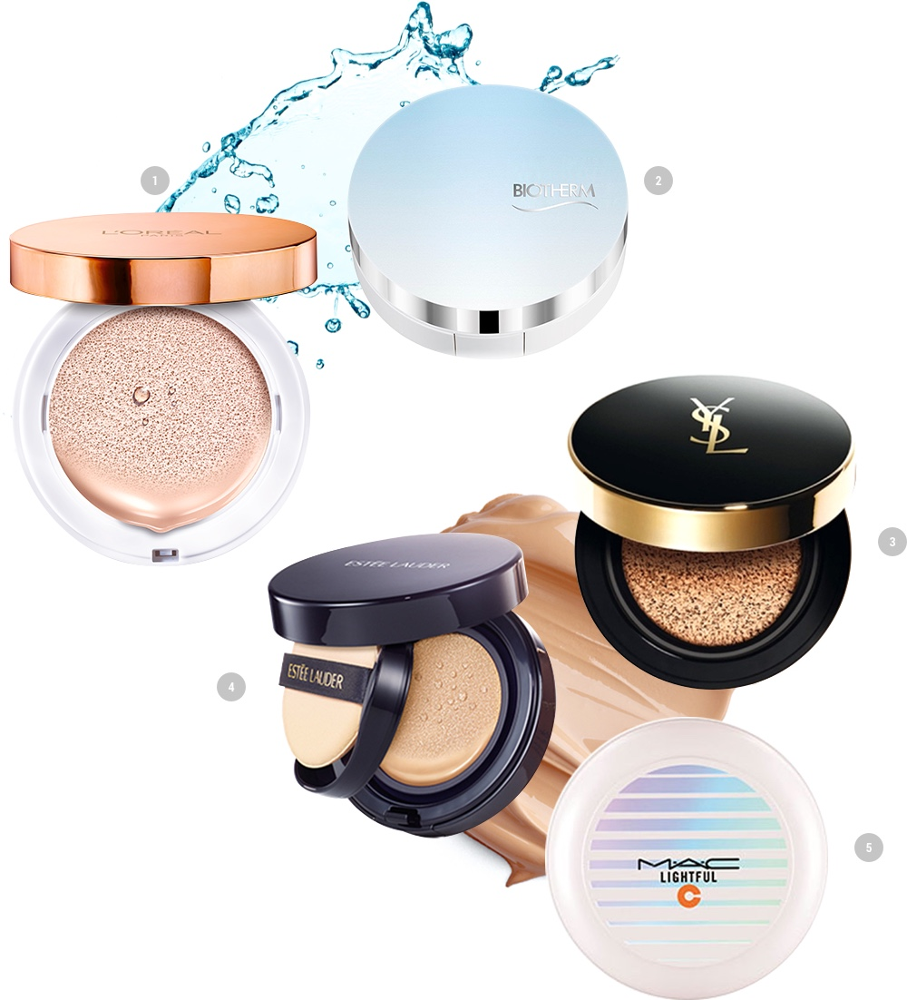

2016年春季，美妝市場正是氣墊大戰時期。 年初MAC出示了Lightful C SPF 50 PA+++ Quick Finish Compact (名字好長！)之後，YSL，蘭蔻，雅詩蘭黛，歐萊雅巴黎，植村秀，芭比波朗，碧歐泉等國際大牌們陸續推出了氣墊產品。 K-Beauty 熱風引起的氣墊已經滲透到全世界女性的美妝必備清單當中，不得不說國際大牌們也認定了 韓國氣墊的優秀性。 對於追求自然透明肌膚的亞洲人來說，氣墊是首選且是最佳選擇！ 2016春季美妝趨勢是強調臉部輪廓的‘高光修容妝(Strobing Makeup) ’，隨著這一流行，各品牌出示的氣墊都是以柔和的質感和水潤的肌膚為特點；再加上各品牌的強點，這真的是一場氣墊戰爭的開始。 雅詩蘭黛的氣墊結合了粉底液和粉餅的質感，碧歐泉則強調了Cooling 效果。 .LANCOME的二重網氣墊比原款玫瑰氣墊有更好的吸收功能和遮瑕功能；MAC的氣墊添加了礦物質以及維他命成分，即帖服更是能有效地遮瑕，足以被稱之為Silfi Cushion；植村秀推出了限量版的puff, 它不像市中其他粉撲要輕輕拍打，而是要輕輕地擦拭抹開才會有效。
" 보다 얼굴을 입체적으로 보이게 해주는 ‘스트로빙 메이크업’인데,
"
여기에 발맞춰 새로이 출시된 해외 쿠션 팩트들 또한 부드러운 질감과 촉촉한 피부표현이 가능한 것이 특징 ”
想要補水能力強的產品？選擇‘歐萊雅巴黎奇煥水光美顏精華氣墊’或‘碧歐泉光透奇跡水氣墊’就絕對不會有錯。要求有效的遮瑕功能又希望它持久，推薦雅詩蘭黛的‘Double Wear Cushion BB All Day Wear Liquid Compact’或者‘YSL Le Cushion ENCRE DE PEAU輕透無重羽毛氣墊粉底’,MAC Lightful C SPF 50 PA+++ Quick Finish Compact 。當然大部分的氣墊不只集中在一個功能上：水分，遮瑕，柔和的質感等一個都沒有少。韓國國內的元祖氣墊品牌們也陸續推出Artist Collaboration 或者添加新功能的新產品。 現在可以告訴我，妳的選擇了嗎？!